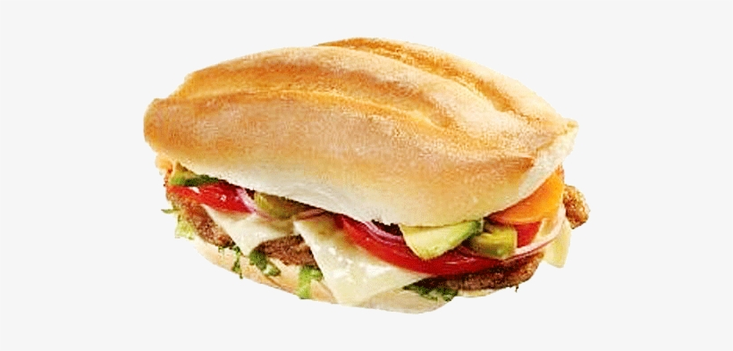

Enchilada Recipe

A type of sandwich in Mexico.
Ingredients
- Telera Rolls
- Carne Asada
- Beans
- Onion
- Avocado
- Tomato
- Lettuce
- Cheese
Steps
- Start with a nice smear of spreads (mayo, mashed avocado, refried beans if using)
on both the top and bottom halves of the roll. Not only will this keep the sandwich moist,
but it'll help to keep the ingredients in the torta intact.
- Next, pile the bottom half of the roll with the sliced carne asada. Add the remaining
toppings onto the carne. Then gently but firmly press the top half of the roll over the
ingredients to hold the torta together. Simple and delicious!